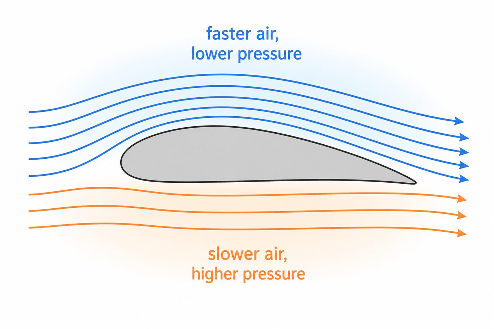
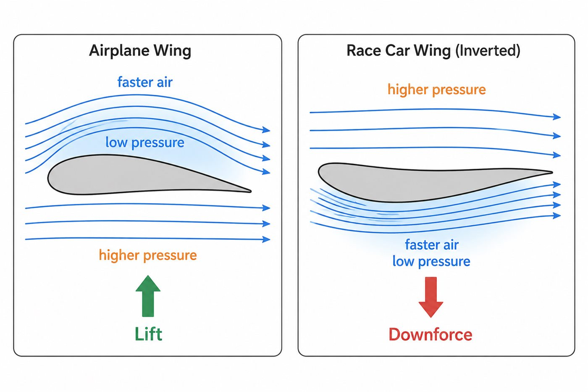
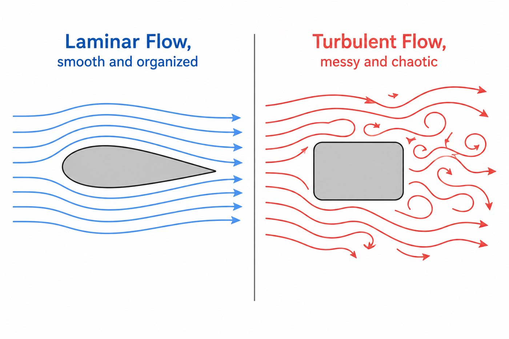

01 — THE BIG IDEA
Why are we even starting here?
Before you can understand a race car wing, you need the one thing that makes all aerodynamics possible: air behaves like a fluid.
Air feels like “nothing” because you cannot see or hold it. But once a car, cyclist or falling leaf moves quickly, air becomes very real. It pushes back, bends around shapes and forms swirling wakes.
Every aerodynamic device exists because engineers learned to guide this invisible fluid. Before wings and downforce, we need to get comfortable with air itself.
Wave your open hand quickly, then turn it edge-on and repeat. The resistance changes because your hand is moving through a real substance.
02 — FIRST PRINCIPLE
What does “fluid” actually mean?
In physics, a fluid is any substance that flows and takes the shape of its container. That includes liquids and gases. Water is a fluid. Air is one too.
Your water intuition is useful: water bends around rocks, speeds through narrow gaps and swirls behind boats. Air behaves similarly around a car, although it is lighter and invisible.
03 — THE INVISIBLE PUSH
Pressure is acting on you right now
Air constantly pushes from every direction. You do not normally notice because those pushes are balanced. A useful force appears when pressure becomes stronger on one side than another.
In a simple streamline picture, faster-moving air is associated with lower static pressure, while slower-moving air is associated with higher static pressure.


04 — WHY SPEED MATTERS
Velocity changes everything
A gentle breeze barely moves a leaf; a storm can damage a roof. Both are air, but speed changes the force enormously. Aerodynamic force grows roughly with the square of speed.
At a standstill there is no meaningful relative airflow over a wing. At low speed the effect is modest. At race speed the pressure differences become powerful.

05 — HOW AIR MOVES
Laminar and turbulent flow
Laminar flow moves in smooth, orderly layers. Turbulent flow mixes and swirls. This comparison is a useful first mental picture, but turbulent flow is not automatically bad.

A turbulent boundary layer can sometimes stay attached better than a laminar one. Engineers do not simply chase laminar flow everywhere—they manage separation, wake size and energy loss.
06 — THE MENTAL MODEL
Bring the ideas together
Unequal pressure across a surface creates a net force.
Speed makes aerodynamic effects grow quickly.
Shape decides where air attaches, separates and forms a wake.
When you see an aero part, ask: How does this shape change the pressure, speed and direction of the air? That question is the beginning of aerodynamic thinking.
WATCH & EXPLORE
See the idea in motion
Add a Google Drive or YouTube embed here when the recording is uploaded.
The 3D model appears in Lesson 03, where wing shape genuinely matters.
GO DEEPER
Books worth opening
Race Car Aerodynamics — Joseph KatzA motorsport-specific introduction to these foundations.
Understanding Aerodynamics — Doug McLeanDeeper physical reasoning when you are ready.
Introductory Fluid MechanicsYour school physics text can be a perfectly good second explanation.
Finished this lesson? Mark it as complete to track your progress.